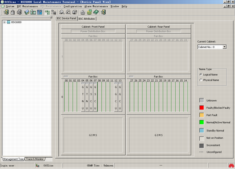

This describes how to log out of the BSC Local Maintenance Terminal. After this operation, the LMT can be operated in offline mode.
Prerequisite
Context
The LMT supports data configuration in offline mode, to avoid the impact of data configuration on the performance of the system. You can configure data on the LMT in offline mode and load the data to the GBAM when you log in to the BSC6000 LMT next time.
Procedure
- Use one of the following three methods to log out of the BSC6000 Local Maintenance Terminal.
- Choose .
- Press F9.
- Click on the tool bar.
- A dialog box is displayed, requesting you to save the existing data.
- Click Yes, a dialog box is displayed, as shown in Figure 1.
Figure 1 BSC6000 Local Maintenance Terminal window (offline mode)

Copyright © Huawei Technologies Co., Ltd.